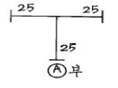
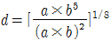
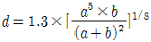
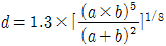
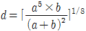
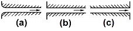

공조냉동기계기능사 (2009-01-18 기출문제)
1과목: 공조냉동안전관리
1. 산업안전보건법의 제정목적과 가장 관계가 적은 것은?
- 산업재해 예방
- 쾌적한 작업환경 조성
- 근로자의 안전과 보건을 유지증진
- 산업안전에 관한 정책수립
(정답률: 82%)

2. 가연성가스 설비의 전기설비는 어떤 기능을 갖는 구조 이어야 하는가? (단, 암모니아, 브롬화메탄 및 공기 중에서 자연발화 하는 가스 제외)
- 방수기능
- 내화기능
- 방폭기능
- 일반기능
(정답률: 80%)
3. 가스보일러 점화시 주의사항 중 맞지 않는 것은?
- 연소실 내의 용적 4배 이상의 공기로 충분히 환기를 행할 것
- 점화는 3~4회로 착화될 수 있도록 할 것
- 갑작스런 실화 시에는 연료공급을 즉시 차단할 것
- 점화버너의 스파크 상태가 정상인가 확인할 것
(정답률: 88%)
4. 기계설비에서 일어나는 사고의 위험점이 아닌 것은?
- 협착점
- 끼임점
- 고정점
- 절단점
(정답률: 93%)
5. 보일러의 안전한 운전을 위하여 근로자에게 보일러의 운전방법을 교육하여 안전사고를 방지하여야 한다. 다음 중 교육내용에 해당되지 않는 것은?
- 가동 중인 보일러에는 작업자가 항상 정위치를 떠나지 아니할 것
- 압력방출장치, 압력제한스위치, 화염검출기의 설치 및 정상 작동 여부를 점검할 것
- 압력방출장치의 개방된 상태를 확인할 것
- 고저수위조절장치와 급수펌프와의 상호 기능 상태를 점검할 것
(정답률: 78%)
6. 냉동기 운전 중 액압축이 일어나는 경우에 나타나는 현상으로 옳은 것은?
- 토출배관이 따뜻해진다.
- 실린더에 서리가 낀다.
- 실린더가 과열된다.
- 축수하중이 감소한다.
(정답률: 55%)
7. 연소에 관한 설명이 잘못된 것은?
- 온도가 높을수록 연소속도가 빨라진다.
- 입자가 작을수록 연소속도가 빨라진다.
- 촉매가 작용하면 연소속도가 빨라진다.
- 산화되기 어려운 물질일수록 연소속도가 빨라진다.
(정답률: 89%)
8. 가스용접 작업시 아세틸렌가스와 접촉하는 부분에 사용해서는 안 되는 것은?
- 알루미늄
- 납
- 구리
- 탄소강
(정답률: 61%)
9. 가스 용접기를 이용하여 동관을 용접하였다. 용접을 마친 후 조치로서 올바른 것은? (단, 용기의 매인밸브를 추후 닫는 것으로 한다.)
- 산소 밸브를 먼저 닫고, 아세틸렌 밸브를 닫는다.
- 아세틸렌 밸브를 먼저 닫고, 산소 밸브를 닫을 것
- 산소 및 아세틸렌 밸브를 동시에 닫을 것
- 가스 압력조정기를 닫은 후 호스 내 가스를 유지 시 킬 것
(정답률: 71%)
10. 감전되었을 경우 위험도가 가장 큰 것은?
- 통전 전류의 크기
- 통전 경로
- 전원의 종류
- 통전시간과 전격의 인가 위상
(정답률: 76%)
11. 안전보건표시에서 비상구 및 피난소, 사람 또는 차량의 통행표지의 색채는?
- 빨강
- 녹색
- 파랑
- 노랑
(정답률: 84%)
12. 감전 되거나 전기 화상을 입을 위험이 있는 작업에서 인체의 전부나 일부를 보호하기 위해 구비해야 할 것은?
- 보호구
- 구명구
- 구급용구
- 비상등
(정답률: 92%)
13. 냉동제조시설이 적합하게 설치 또는 유지, 관리 되고 있는지 확인하기 위한 검사의 종류가 아닌 것은?
- 중간검사
- 완성검사
- 불시검사
- 정기검사
(정답률: 66%)
14. 가스용접 작업 중에 발생되는 재해가 아닌 것은?
- 전격
- 화재
- 가스폭발
- 가스중독
(정답률: 93%)
15. 구내 운반차를 사용하여 운반 작업을 하고자 한다. 사전 점검 사항에 해당되니 않는 것은?
- 제동장치 및 조종장치의 기능의 이상 유무
- 바퀴의 이상 유무
- 와이어로프 등의 이상 유무
- 충전장치를 포함한 홀더 등의 결합상태의 이상 유무
(정답률: 63%)
2과목: 냉동기계
16. 냉매와 화학 분자식이 옳게 짝지어진 것은?(오류 신고가 접수된 문제입니다. 반드시 정답과 해설을 확인하시기 바랍니다.)
- R-113 : CCl3F3
- R-114 : CCl2F4
- R-500 : CCl2F2＋CH2CHF2
- R-502 : CHClF2＋C2ClF3
(정답률: 49%)
17. 다음과 같이 25A×25A×25A의 티이에 20A관을 직접 A부에 연결하고자 할 때 필요한 이음쇠는 어느 것인가?

- 유니언
- 캡
- 이경부싱
- 플러그
(정답률: 79%)
18. -15℃에서 건조도 0인 암모니아 가스를 교축 팽창시켰을 때 변화가 없는 것은?
- 비체적
- 압력
- 엔탈피
- 온도
(정답률: 83%)
19. 간접식과 비교한 직접 팽창식 냉동기의 특징이 아닌 것은?
- 냉매 순환량이 적다.
- 냉매의 증발온도가 높다.
- 구조가 간단하다.
- 냉매 소비량(충전량)이 적다.
(정답률: 45%)
20. 냉동장치에서 전자밸브를 사용하는데 그 사용목적 중 거리가 먼 것은?
- 리키드 백(Liquid back)방지
- 냉매, 브라인의 흐름제어
- 습도제어
- 온도제어
(정답률: 67%)
21. 고압 수액기에 부착되지 않는 것은?
- 액면계
- 안전밸브
- 전자밸브
- 오일드레인 밸브
(정답률: 58%)
22. 냉각탑의 엘리미네이터(Eliminator)가 있는데 그 사용목적은?
- 물의 증발을 양호하게 한다.
- 공기를 흡수하는 장치다.
- 물이 과냉각되는 것을 방지한다.
- 수분이 대기 중에 방출하는 것을 막아주는 장치다.
(정답률: 75%)
23. 고속 다기통 압축기의 정상유압으로 옳은 것은?
- 정상저압＋0.5 ~ 1.5kg/cm2
- 정상저압＋1.5 ~ 3.0kg/cm2
- 정상저압＋4.5 ~ 5.5kg/cm2
- 정상저압＋6.5 ~ 8.5kg/cm2
(정답률: 73%)
24. 원심식 냉동기의 서어징 현상에 대한 설명 중 옳지 않은 것은?
- 흡입가스 유량이 증가되어 냉매가 어느 한계치 이상으로 운전될 때 주로 발생한다.
- 전류계의 지침이 심하게 움직인다.
- 고압이 저하하며, 저압이 상승한다.
- 소음과 진동을 수반하고 베어링 등 운동부분에서 급격한 마모현상이 발생한다.
(정답률: 51%)
25. 2개 이상의 엘보를 사용하여 배관의 신축을 흡수하는 신축이음은?
- 루우프형 이음
- 벨로우즈형 이음
- 슬리브형 이음
- 스위블형 이음
(정답률: 67%)
26. 25A 강관의 관용 나사산수는 길이 25.4㎜에 대하여 몇 산이 표준인가?
- 19산
- 14산
- 11산
- 8산
(정답률: 62%)
27. “회로 내의 임의의 점에서 들어오는 전류와 나가는 전류의 총합은 0이다.” 이것은 무슨 법칙에 해당하는가?
- 키르히호프의 제1법칙
- 키르히호프의 제2법칙
- 줄의 법칙
- 앙페르의 오른나사 법칙
(정답률: 74%)
28. 다음 설명 중 내용이 맞는 것은?
- 1[BTU]는 물 1[Lb]를 1[℃]높이는데 필요한 열량이다.
- 절대압력은 대기압의 상태를 0으로 기준하여 측정한 압력이다.
- 이상기체를 단열팽창 시켰을 때 온도는 내려간다.
- 보일-샤를의 법칙이란 기체의 부피는 압력에 반비례하고 절대온도에 반비례한다.
(정답률: 51%)
29. 공정점이 -55℃이고 저온용 브라인으로서 일반적으로 제빙, 냉장 및 공업용으로 많이 사용되고 있는 것은?
- 염화칼슘
- 염화나트륨
- 염화마그네슘
- 프로필렌글리콜
(정답률: 77%)
30. 다음 중 이상적인 냉동사이클에 해당되는 것은?
- 오토 사이클
- 카르노 사이클
- 사바테 사이클
- 역카르노 사이클
(정답률: 85%)
31. 시간적으로 변화하지 않는 일정한 입력신호를 단속신호로 변환하는 회로로서 경보용 부저 신호의 발생 등에 많이 사용하는 것은?
- 선택회로
- 플리커 회로
- 인터록크 회로
- 자기유지회로
(정답률: 66%)
32. 20℃에서 4Ω의 동선이 온도 80℃로 상승하였을 때 저항은 몇 Ω이 되는가? (단, 동선의 저항온도계수 = 0.00393이다.)
- 3.94
- 4.94
- 5.94
- 6.94
(정답률: 53%)
33. 냉동장치에서 유압이 낮아지는 원인이 아닌 것은?
- 오일이 부족할 때
- 유온이 낮을 때
- 유 여과망이 막혔을 때
- 유압조정밸브가 많이 열렸을 때
(정답률: 45%)
34. 고압(응축압력)이 18[kg/cm2.a], 저압(증발압력)이 5[kg/cm2.a]일 때 압축비는?
- 2
- 3.6
- 4.5
- 6.0
(정답률: 74%)
35. 감온식 팽창밸브(T.E.V)작동에 관계없는 것은?
- 압축기의 압력
- 증발기내 냉매 증발압력
- 스프링의 압력
- 감온통 내의 가스 압력
(정답률: 35%)
36. 2단 압축 냉동 사이클에 대한 설명으로 틀린 것은?
- 2단 압축이란 증발기에서 증발한 냉매 가스를 저단 압축기와 고단 압축기로 구성되는 2대의 압축기를 사용하여 압축하는 방식이다.
- NH3 냉동장치에서 증발온도가 -35℃정도 이하가 되면 2단압축을 하는 것이 유리하다.
- 압축비가 10이상이 되는 냉동장치인 경우에만 2단 압축을 해야 한다.
- 최근에는 한대의 압축기로써 각각 다른 2대의 압축기 역할을 할 수 있는 콤파운드 압축기를 사용하기도 한다.
(정답률: 64%)
37. 대기압이 1.0⑤at일 때 1,300㎜Hg.a는 계기압력으로 몇 KPa인가?
- 22.56
- 34.76
- 52.96
- 74.76
(정답률: 33%)
38. 2중 효용 흡수식 냉동기에 대한 설명 중 옳지 않은 것은?
- 단중 효용 흡수식 냉동기에 비해 효율이 높다.
- 2개의 재생기가 있다.
- 2개의 증발기가 있다.
- 2개의 열교환기를 가지고 있다.
(정답률: 60%)
39. 증발잠열을 이용하는 물질로서 맞지 않는 것은?
- 알콜
- 암모니아
- 물
- 수증기
(정답률: 53%)
40. 스크롤 압축기의 장점으로 맞는 것은?
- 토크 변동이 많다.
- 압축요소의 미끄럼 속도가 빠르다.
- 흡입밸브나 토출밸브가 없으며, 부품수가 적다.
- 고효율, 고소음, 고진동 및 고신뢰성을 갖는다.
(정답률: 70%)
41. 이원냉동사이클에 대한 설명 중 틀린 것은?
- 다단 압축방식보다 저온에서 좋은 효율을 얻을 수 있다.
- 저온측 냉매와 고온측 냉매를 구분하여 사용한다.
- 저온측 응축기의 열은 냉각수를 이용하여 냉각시킨다.
- 이원냉동은 -100℃정도의 저온을 얻고자 할 때 사용한다.
(정답률: 42%)
42. 다음 중 열펌프(Heat Pump)의 열원이 아닌 것은?
- 대기
- 지열
- 태양열
- 빙축열
(정답률: 72%)
43. 암모니아 냉매 배관을 설치할 때 시공방법으로 틀린 것은?
- 관이음 패킹재료는 천연고무를 사용한다.
- 흡입관에는 U트랩을 설치한다.
- 토출관의 합류는 Y접속으로 한다.
- 액관의 트랩부는 오일 드래인 밸브를 설치한다.
(정답률: 67%)
44. 제빙장치 중 결빙한 얼음을 제빙관에서 떼어낼 때 관내의 얼음 표면을 녹이기 위해 사용하는 기기는?
- 주수조
- 양빙기
- 저빙고
- 용빙조
(정답률: 76%)
45. 다음 중 냉동기유에 가장 용해하기 쉬운 냉매는 어느 것인가?
- R-11
- R-13
- R-14
- R-502
(정답률: 52%)
3과목: 공기조화
46. 공기가 노점온도보다 낮은 냉각코일을 통과하였을 때의 상태를 기술한 것 중 틀린 것은?
- 상대습도 저하
- 절대습도 저하
- 비체적 저하
- 건구온도 저하
(정답률: 55%)
47. 온풍 난방법에서의 특징에 대한 설명 중 맞는 것은?
- 예열부하가 작아 예열시간이 짧다.
- 송풍기의 전력 소비가 작다.
- 송풍기의 덕트 스페이스가 필요 없다.
- 실온과 동시에 실내의 습도와 기류의 조정이 어렵다.
(정답률: 64%)
48. 건축물의 내벽, 내창, 천정 등을 통하여 손실되는 열량을 계산할 때 관계없는 것은?
- 열통과율
- 면적
- 인접실과 온도차
- 방위계수
(정답률: 72%)
49. 원형 덕트의 지름을 사각 덕트로 변형시킬 때, 원형 덕트의 d와 사각 덕트의 긴 변길이 a 및 짧은 변길이 b의 관계식을 나타낸 것 중 옳은 것은?




(정답률: 62%)
50. 200rpm으로 운전되는 송풍기가 4KW의 성능을 나타내고 있다. 회전수를 250rpm으로 상승시키면 동력은 몇 KW가 소요 되는가?
- 5.5
- 7.8
- 8.3
- 8.8
(정답률: 46%)
51. 공조용 전열기의 이용에 관한 설명이다. 옳은 것은?
- 배열회수에 이용되는 배기는 탕비실, 주방 등을 포함한 모든 공간의 배기를 포함한다.
- 회전형 전열교환기의 로터 구동 모터와 급배기 팬은 반드시 연동 운전할 필요가 없다.
- 중간기 외기냉방을 행하는 공조시스템의 경우에도 별도의 덕트 없이 이용할 수 있다.
- 외기량과 배기량의 밸런스를 조정할 때 배기량은 외기량의 40%이상을 확보해야 한다.
(정답률: 59%)
52. 거실의 창문 밑에 설치할 주철제 방열기의 상당방열면적은 6m2로 산출되었다. 표준상태에서 이 방열기가 가지는 방열량은 몇 kcal/h인가? (단, 증기난방인 경우)
- 2,700
- 3,300
- 3,900
- 4,500
(정답률: 46%)
53. (a), (b), (c)와 같은 관로의 국부저항계수(전압기준)가 큰 것부터 작은 순서로 나열한 것은?

- (a) ＞ (b) ＞ (c)
- (a) ＞ (c) ＞ (a)
- (b) ＞ (c) ＞ (a)
- (c) ＞ (b) ＞ (a)
(정답률: 73%)
54. “EDR = (방열기의 전방열량 / 표준방열량)”에서 EDR은 무엇인가?
- 증발량
- 상당방열면적
- 응축수량
- 실제방열량
(정답률: 72%)
55. 13,500m3/h의 풍량을 나타낸 것으로 맞는 것은?
- 225C[MM]
- 225[CMS]
- 13,500C[MM]
- 13,500[CMS]
(정답률: 38%)
56. 겨울철 창면을 따라서 존재하는 냉기에 의해 외기와 접한 창면에 존재하는 사람은 더욱 추위를 느끼게 되는 현상을 콜드 드래프트라 한다. 다음 중 콜드 드래프트의 원인으로 볼 수 없는 것은?
- 인체 주위의 온도가 너무 낮을 때
- 주위벽면의 온도가 너무 낮을 때
- 창문의 틈새가 많을 때
- 인체 주위 기류 속도가 너무 느릴 때
(정답률: 78%)
57. 1대의 응축기로(실외기)로 여러 대의 냉각코일(실내기)을 운영하는 방식으로 실외기의 설치면적을 줄일 수 있어 많이 사용되는 형식을 무엇이라 하는가?
- 룸쿨러 방식
- 패키지유닛 방식
- 멀티유닛 방식
- 히트펌프 방식
(정답률: 55%)
58. 다음 중 공기의 감습 방법에 해당되지 않는 것은?
- 흡수식
- 흡착식
- 냉각식
- 가열식
(정답률: 63%)
59. 가열코일에 사용되는 핀의 형태 중에서 공기측 열전달율이 가장 높은 것은?
- 평판 핀
- 파형 핀
- 슬릿 핀
- 수퍼 슬릿 핀
(정답률: 54%)
60. 공조덕트의 취출구에 대한 설명이다. 옳지 않는 것은?
- 천정 취출구의 경우 온풍 취출이면 도달거리가 짧아진다.
- 취출구의 배치는 최소 확산반경이 겹치지 않도록 해야 한다.
- 베인형 취출구에서 베인 각도를 확대하면 소음을 줄일 수 있다.
- 베인형 취출구의 천장 설치의 경우 냉방 시에는 베인 각도를 작게 한다.
(정답률: 55%)